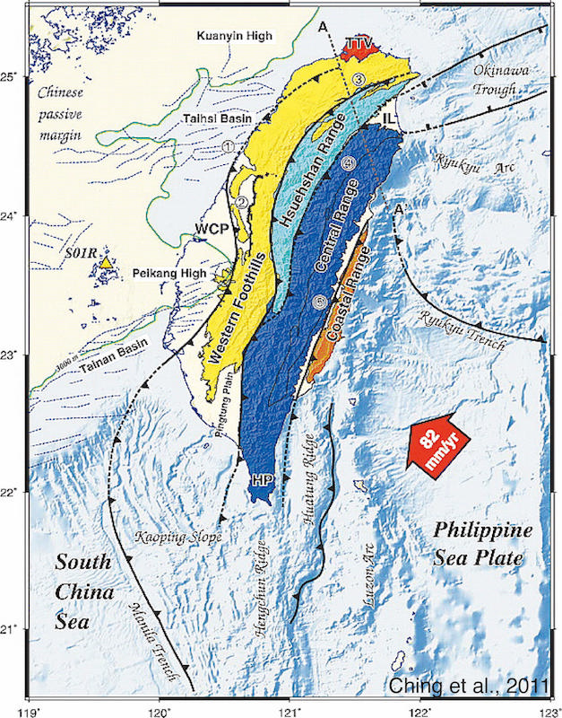
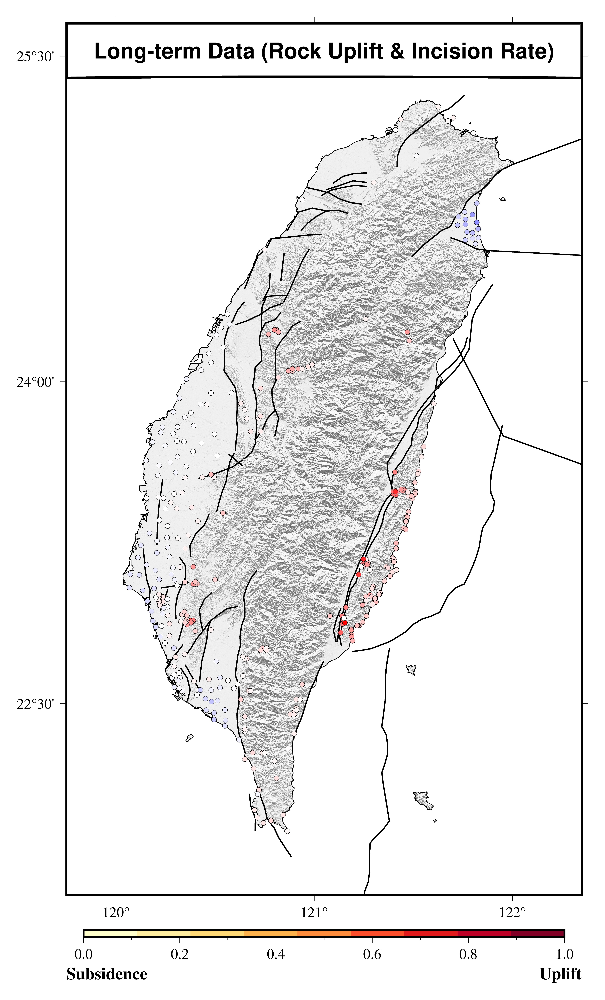
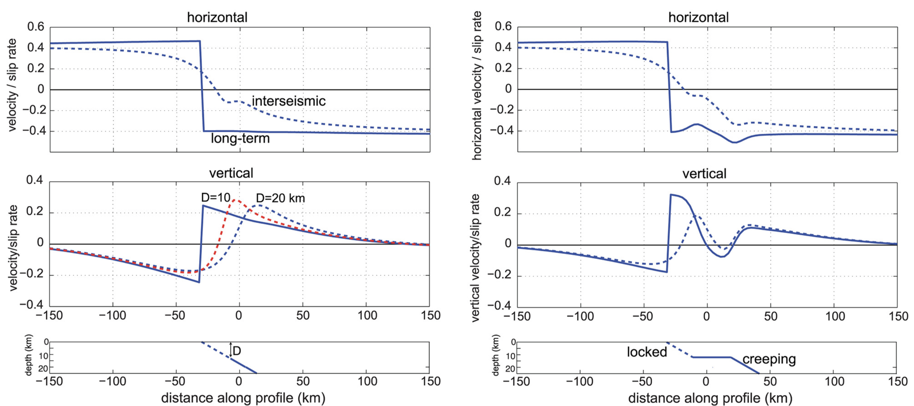
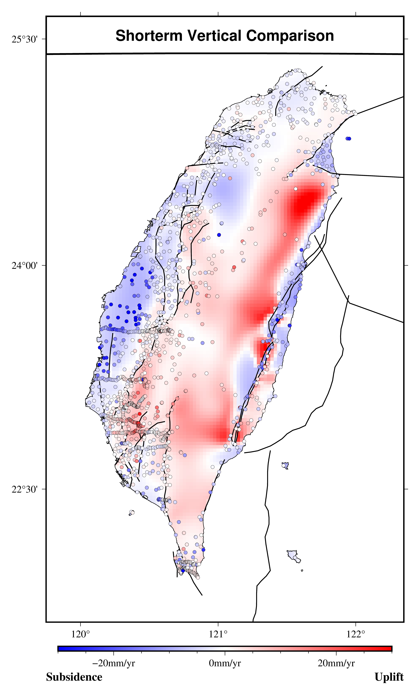
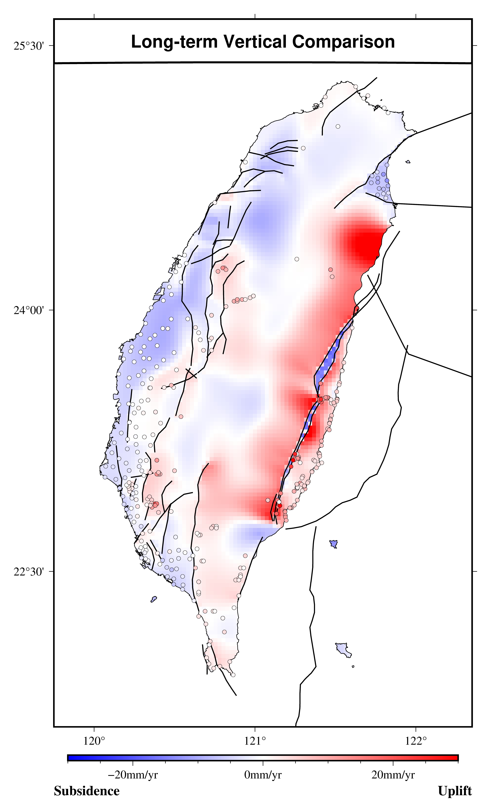
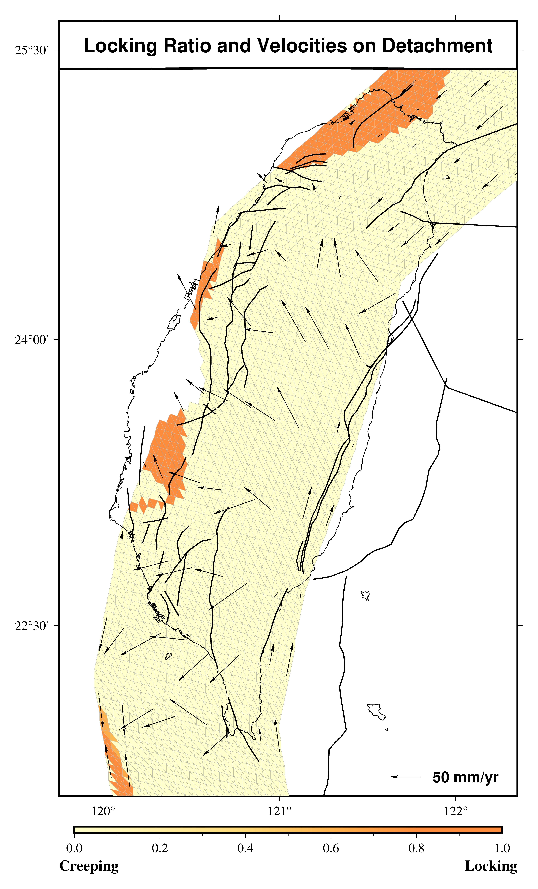

A 3D Kinematic Plate Model Including Long-term and Interseismic Vertical Deformation in Taiwan
Ping-Chen Chiang1, Kaj M. Johnson1, Kuo-En Ching2, Brian J. Yanites1, Ray Y. Chuang3- Department of Earth & Atmospheric Science, Indiana University Bloomington, Indiana, USA
- Department of Geomatics, National Cheng Kung University, Tainan, Taiwan
- Department of Geography, National Taiwan University, Taipei, Taiwan
Introduction
- Examine deformation over the millennial times scale.
- Estimating fault slip rates and interseismic locking using a 3-D lithospheric kinematic model.
- Reconcile short-term GPS, leveling rates with long-term geologic uplift rates to constrain our inversion.
Tectonic Setting

- Oblique convergence between the Luzon volcanic arc and the continental margin of the Eurasian plate.
- Philippine Sea plate overrides Eurasian plate in southern Taiwan but subducts underneath Eurasia plate in northern Taiwan.
Fault Geometry
56 Faults:
- 45 from Taiwan Earthquake Model (TEM)
- 1 from Chen et al. (2020)
- 2 Off Shore Fault
- 4 Trenches & Trough
- 4 Loading Fault
- 1 Detachment
Data



Model

Illustration of elastic plate flexure model (Johnson et al., 2020).
- An elastic upper crust overlying an inviscid lower crust and mantle.
- Assume fully relaxed in long-term and fully elastic in short term.
- Imposed slip rates on fault for long-term deformation and add back slip for interseismic deformation.
Inverse Method
\[
p(s,r,L,\sigma|d)\varpropto p(d|s,r,L,\sigma)p(s,r,L,\sigma) \\
\]
where $ d $: Observation, $ \sigma $: error $ \\$
$ s $: Strike-slip, $ r $: Dip-slip,
$ L $: Locking area
- $ p(d|s,r,L,\sigma) $ is likelihood.
- $ p(s,r,L,\sigma) $ is prior probability.
- We apply probabilistic inversion using Monte Carlo Metropolis sampling to estimate the posterior distribution on the left.
Model Result



Model Result
Model Parameters
Model Parameters

Conclusion
- Combined present-day vertical and horizontal motions with geologic measurements of uplift rate into a model across the Taiwan mountain belt.
- Use probabilistic inversion for fault slip rates and interseismic locking areas by adopt MCMC sampling.
- Explain about 70% of geodetic data and over 80% of long-term vertical geologic rates.
- Our inversions generally require higher slip rates on faults than inferred previously from geologic data.